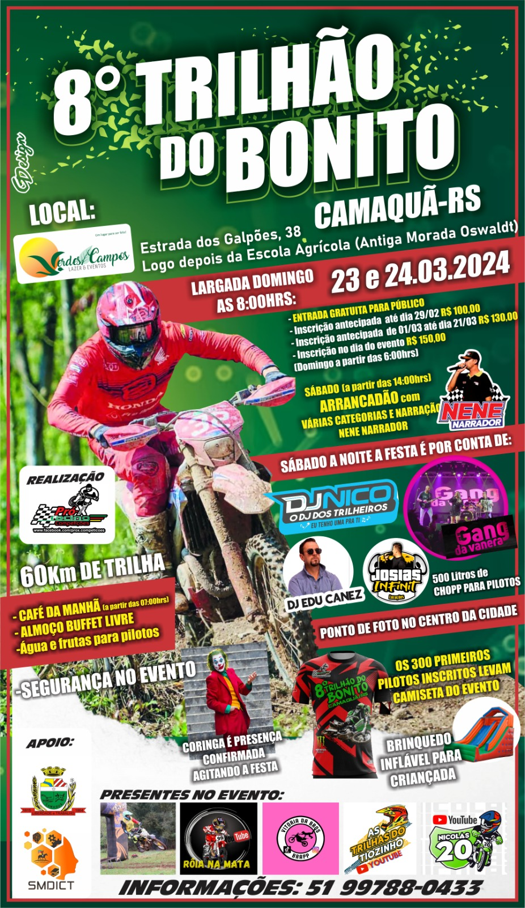
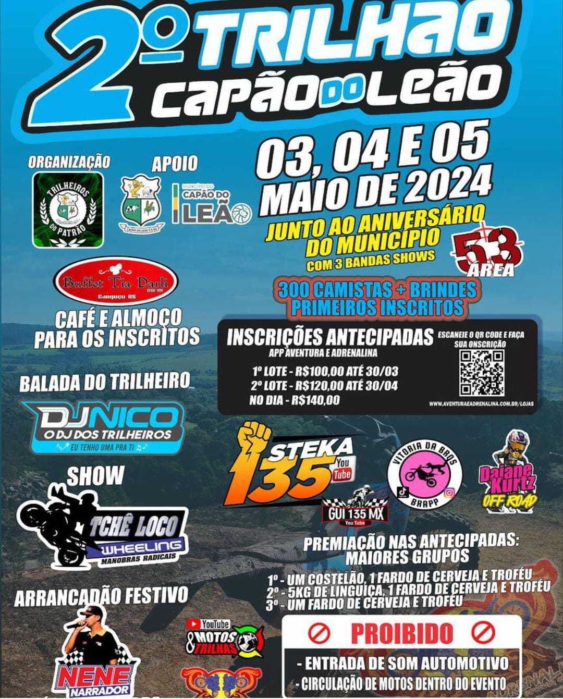
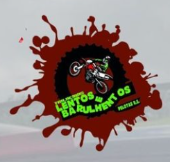

Março

 24 de Março
|
24 de Março
|
 Camaquã
8º Trilhão do Bonito
Camaquã
8º Trilhão do Bonito
Abril
Maio

05 de Maio
|
Capão do Leão (Pelotas)
2º Trilhão Capão do Leão
Julho

21 de Julho (Não confirmado)
|
Pelotas
4ª Trilha do Pessegueiro
Agosto


Setembro